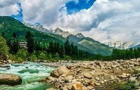
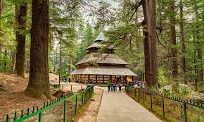
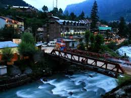
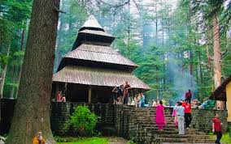
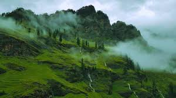
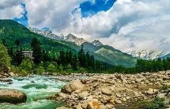
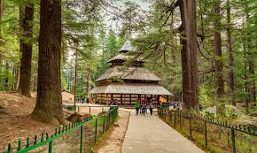
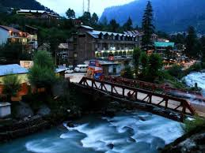
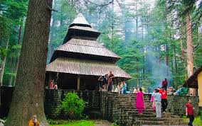
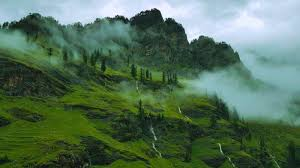

Solang Valley
Adventure hub for paragliding, ATV rides, and snow activities in winter.
Manali offers a blend of mountain scenery, adventure sports and peaceful forest walks. It’s a perfect base for exploring Solang Valley, Rohtang Pass, Atal Tunnel and old Himachali culture.
Whether you want river rafting, snow activities, hiking or slow café days in Old Manali, the town fits every kind of traveler.
Adventure hub for paragliding, ATV rides, and snow activities in winter.
High-altitude pass with snow, panoramic views and dramatic roads.
Cafes by the river, cozy lanes, live music and relaxed vibes.
Iconic wooden temple surrounded by deep cedar forests.
Choose from paragliding, zorbing, skiing (winter), zipline or ATV.
Requires permit. Offers snow play, views and great photography spots.
Riverside cafes, craft shops, yoga places and peaceful evening walks.
Plan depends on season and snow conditions.
Short getaway
Ideal for most visitors
Extended
Beautiful cafés, wooden cottages and relaxed vibes by the river.
Best for couples and long stays.
More hotels, better connectivity, easy access to shops and transport.
Good for families and first-time visitors.
Scenic mountain-view resorts around Naggar and Prini.
Best for peaceful, premium getaways.


 









Practical advice for smoother travel.